← Selected work
Case Study 02 · Product Design
RISE: Real Income, Steady Earnings
Designing financial breathing room for young South Africans navigating the first months after a first paycheck.
01 · Executive summary
The first-payslip problem looks structural, and one point in the loop is designable.
RISE explores what happens after a young person gets a first job. The design hypothesis is not that a banking app can solve unemployment or family obligation. It is that it can protect financial breathing room, reduce shame around help-seeking and support better decisions before a buffer disappears.
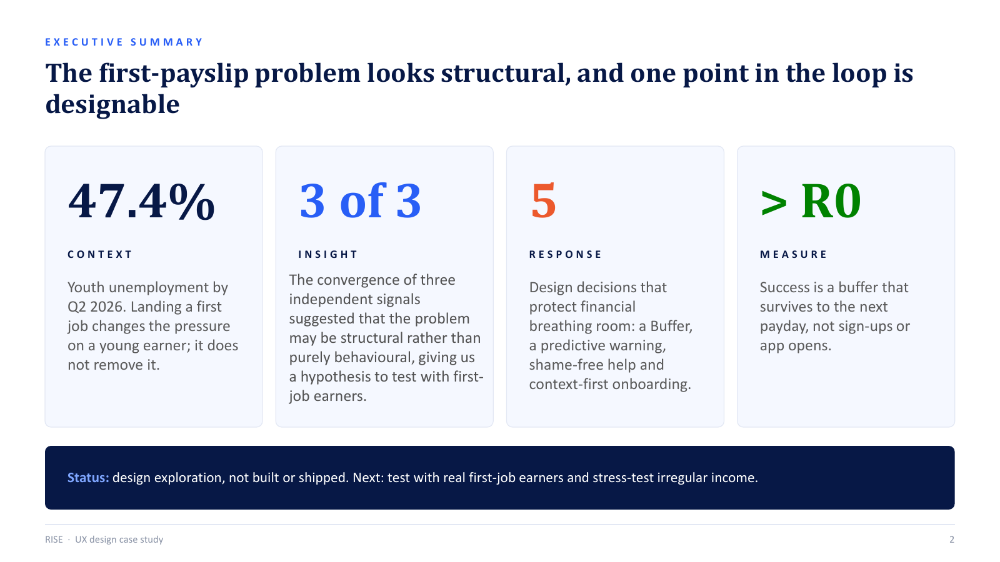
02 · Context
Getting the job does not end the pressure. It changes its shape.
The study reframes the first paycheck as a transition moment: the cost of finding work, pressure to support others, uncertainty about deductions and low financial confidence can arrive at the same time. The point is not to label young earners as “bad with money,” but to understand the conditions around their decisions.
“I finally have a job. Why do I feel like I’m failing at it before I’ve even started spending?” Thabo, composite persona. Illustrative, not a verbatim interview.
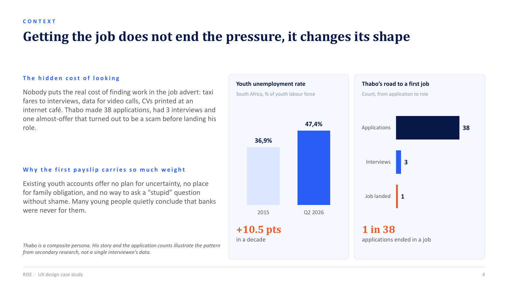
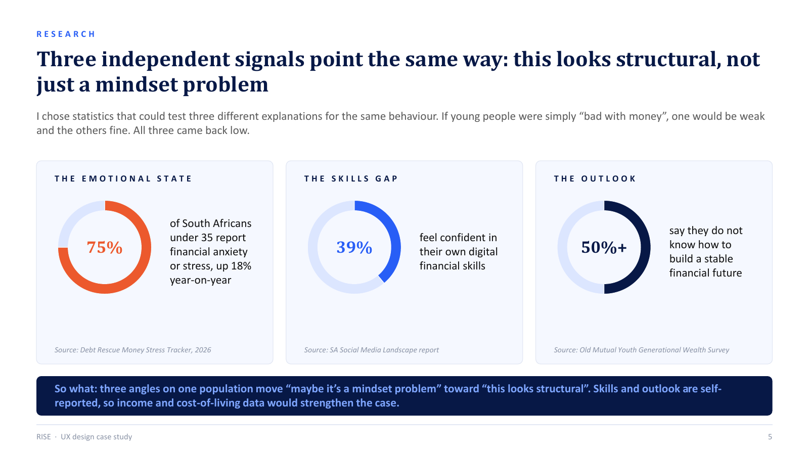
03 · Research signal
Three independent signals pointed in the same direction.
The research compared emotional state, digital financial confidence and future outlook. Because all three signals were weak, the project treated the problem as more than a simple motivation or “mindset” issue.
75%Under-35 financial anxiety/stress signal
39%Self-reported digital financial confidence
50%+Uncertainty about building a stable financial future
These signals are secondary research and form a hypothesis to validate with first-job earners; the deck explicitly notes the limits of self-reported measures.
04 · Synthesis
Thabo does not need more features. He needs to know he will still be okay.
The composite persona, Thabo Mahlangu, is a 23-year-old first-job earner in Johannesburg. His core need is financial breathing room: keeping his buffer above zero while meeting obligations and still making progress.
Behaviour
Checks his balance after payday, debit orders and larger purchases.
Decision lens
“What will I have left after this?” He prefers reversible moves.
Frustration
Banks show what happened, not what happens next.
Motivation
Support home, avoid debt anxiety and end the month with money remaining.
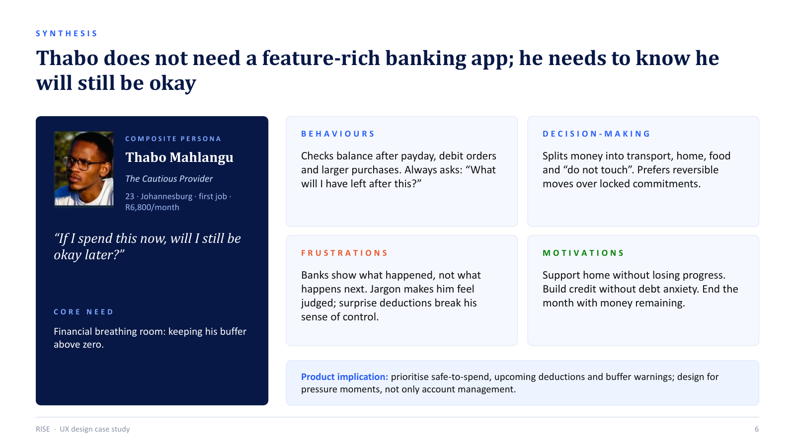
05 · Behavioural loop
A loop explains recurrence better than a linear journey.
The working model moves from payday to fixed family obligation, little/no buffer, shame blocking help-seeking and no safety net forming. Then it repeats. RISE deliberately intervenes between “little/no buffer remains” and “shame blocks help-seeking.”
Payday arrives
→Fixed obligations
→Little buffer
→RISE intervention
→Ask, learn, protect
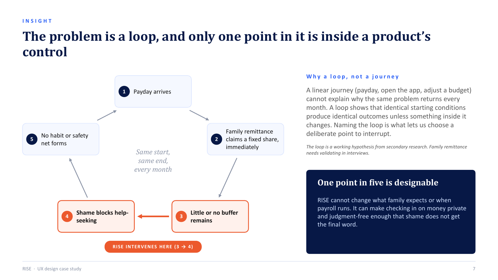
06 · Measurement
Success is a safety net that survives the month, not an account that gets opened.
Sign-up rate was rejected as the primary metric because marketing can inflate it. App opens on payday are useful as a secondary behaviour signal, but still do not prove someone is better off.
North-star measure
Does Thabo still have something in his Buffer the day before his next payslip lands?
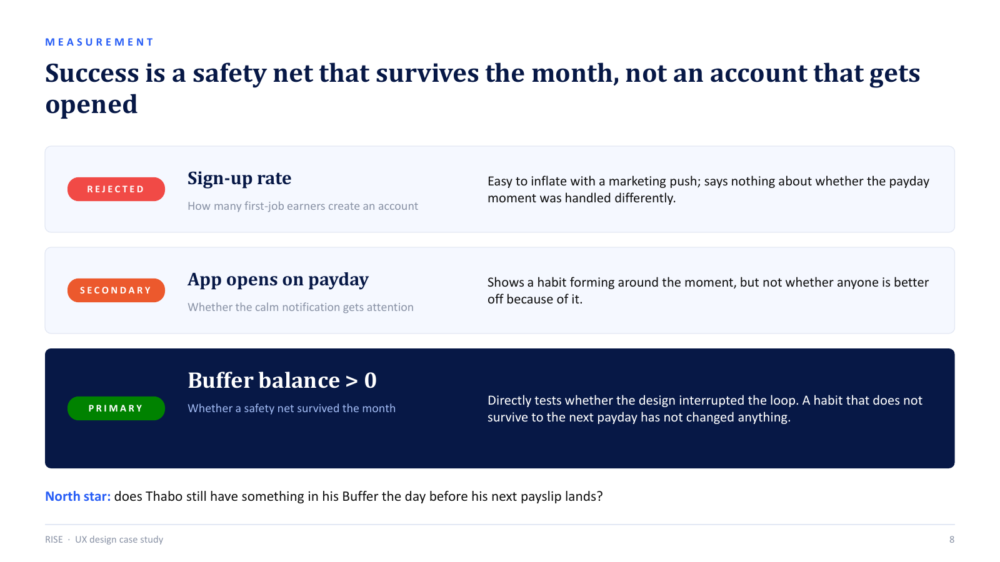
07 · Product strategy
Five decisions, each replacing a banking convention with a response to the loop.
Buffer as a first-class object
Protect stability instead of treating a buffer like another aspiration savings goal.
Rejected: buffer as one more savings pot.Ask RISE quick-question channel
Normalise asking money questions before shame blocks help-seeking.
Rejected: hidden chatbot, FAQ or support ticket flow.Money 101 progressive lessons
Put short learning next to the decision, not in a separate homework-like library.
Rejected: standalone literacy hub.Context-first onboarding
Understand employment stage and priorities before recommendations.
Rejected: KYC as the dominant onboarding experience.Predictive buffer warning
Warn before protected money breaks, with what may happen next and what is safe to spend.
Rejected: fixed-threshold low-balance alert.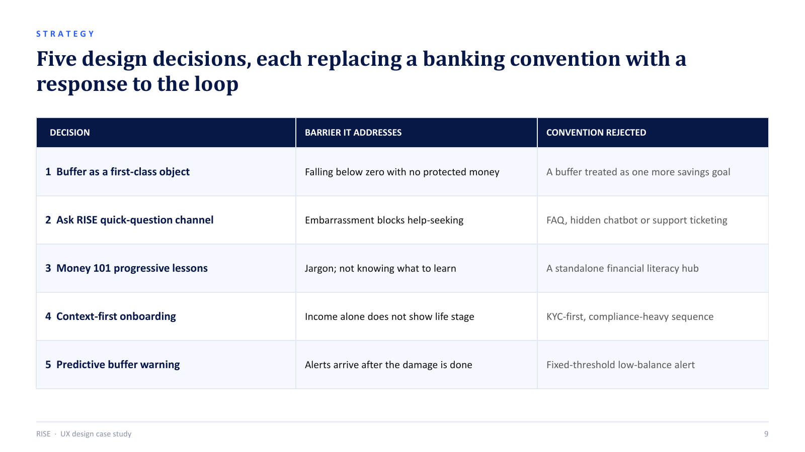
08 · Design decisions in detail
The feature is not the decision. The rationale is.
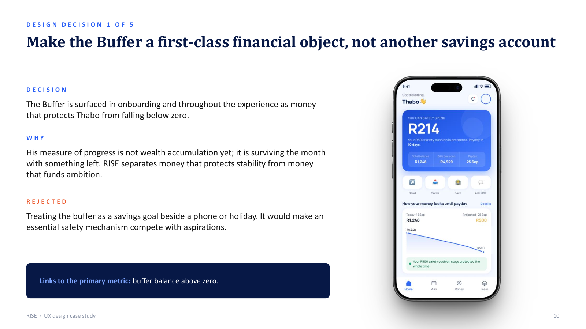
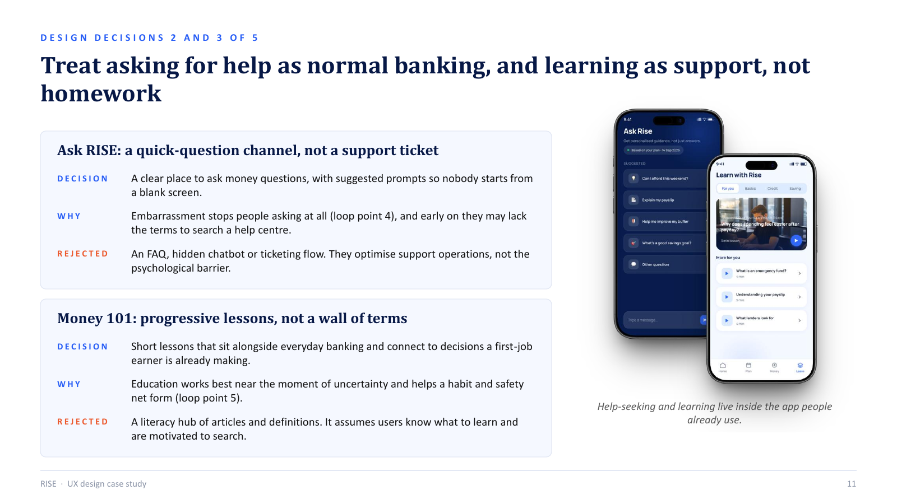
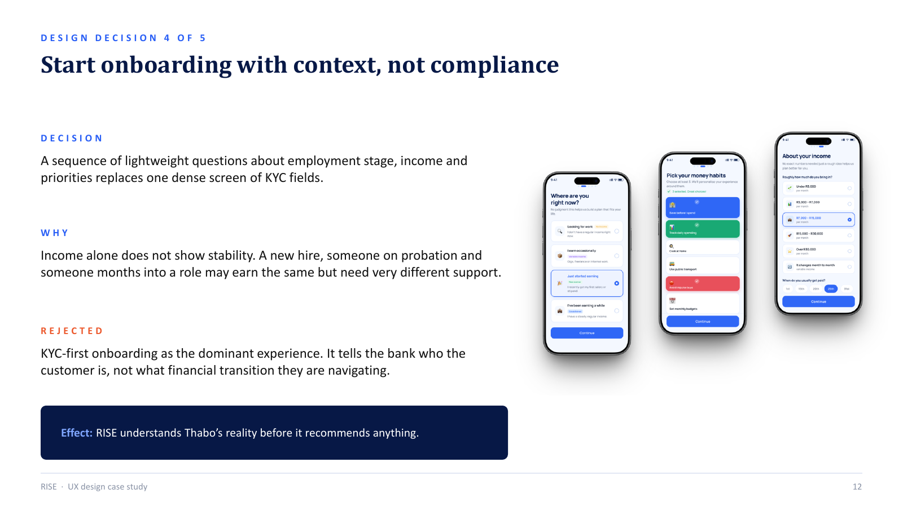
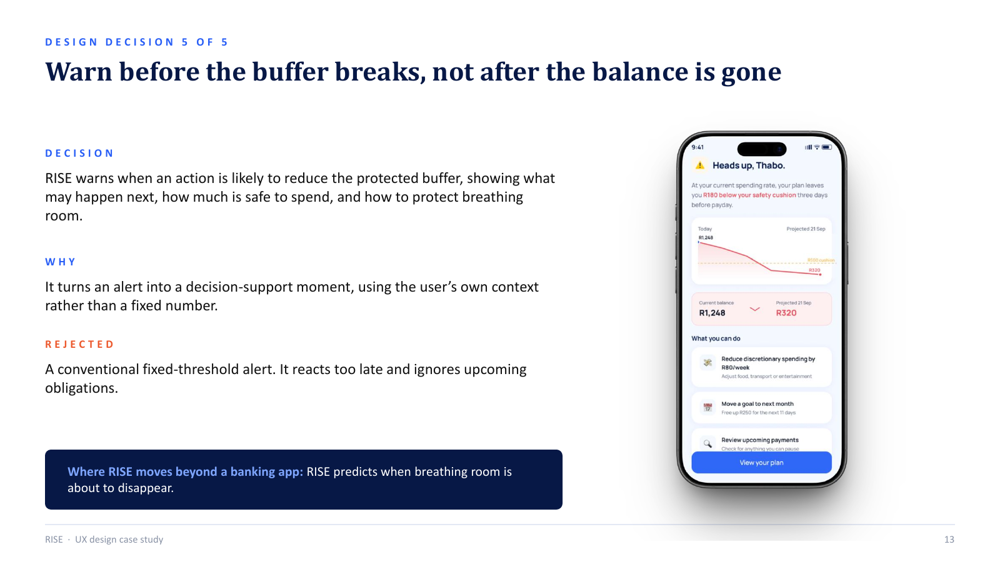
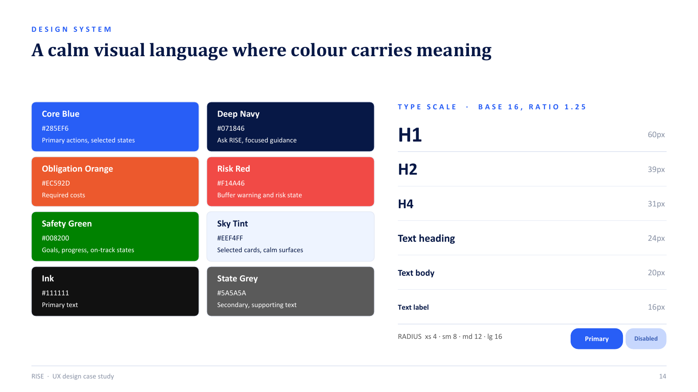
09 · Visual system
A calm interface where colour has a job.
Blue carries primary action and trust; deep navy focuses guidance; orange signals required costs; red is reserved for buffer risk; green represents safety and progress. The system is intentionally restrained so pressure moments are readable rather than visually noisy.
Core BlueDeep NavyObligationRiskSafety
10 · Next steps
The concept is explicit about what is still unproven.
RISE is a design exploration, not a shipped product. The next work would test the Buffer, predictive warning and Ask RISE with real first-job earners, stress-test the model against irregular/gig income, and measure whether the protected buffer genuinely survives to the next payday.
What I would test first
Comprehension of “safe to spend,” whether the warning feels supportive rather than restrictive, and whether Ask RISE lowers the psychological barrier to seeking help.
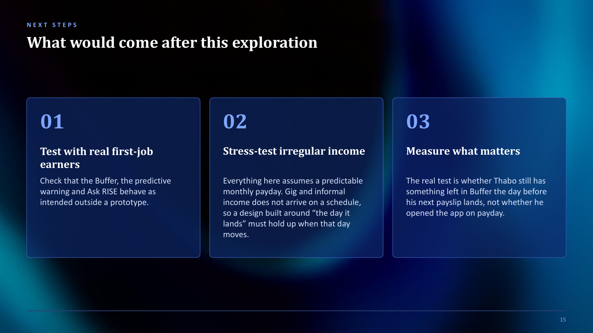
Want the complete 16-page case study?
Download the full deck with the research framing, loop, design decisions and system.
Download full case study ↓